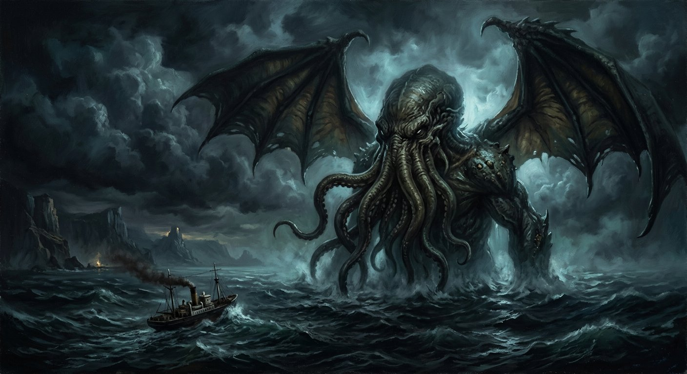
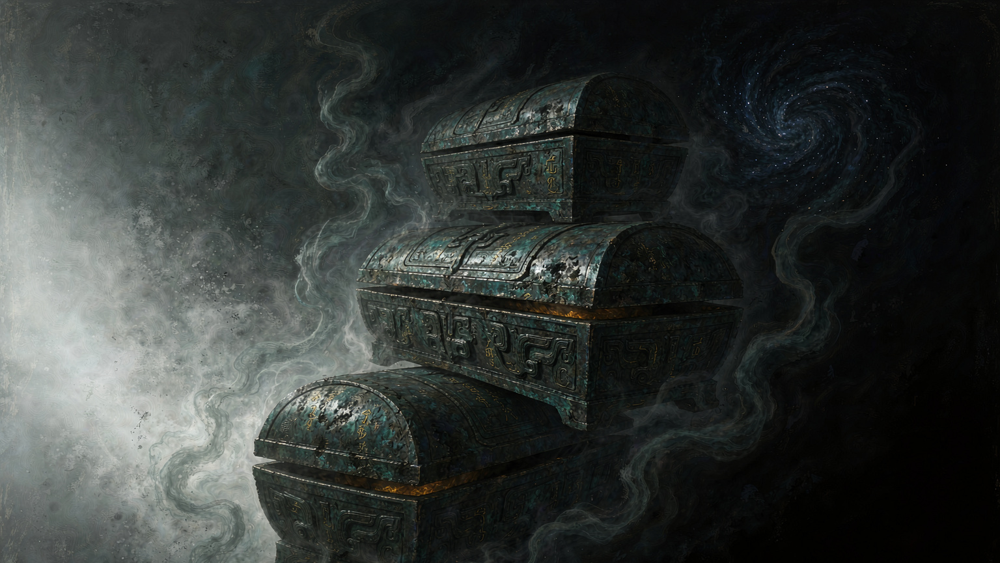
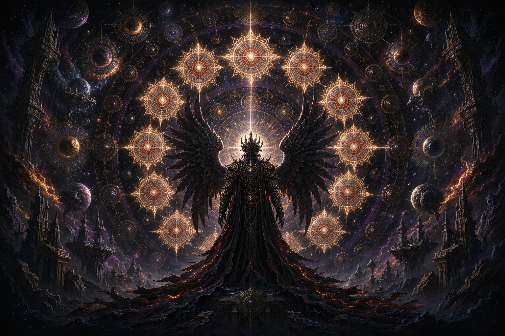
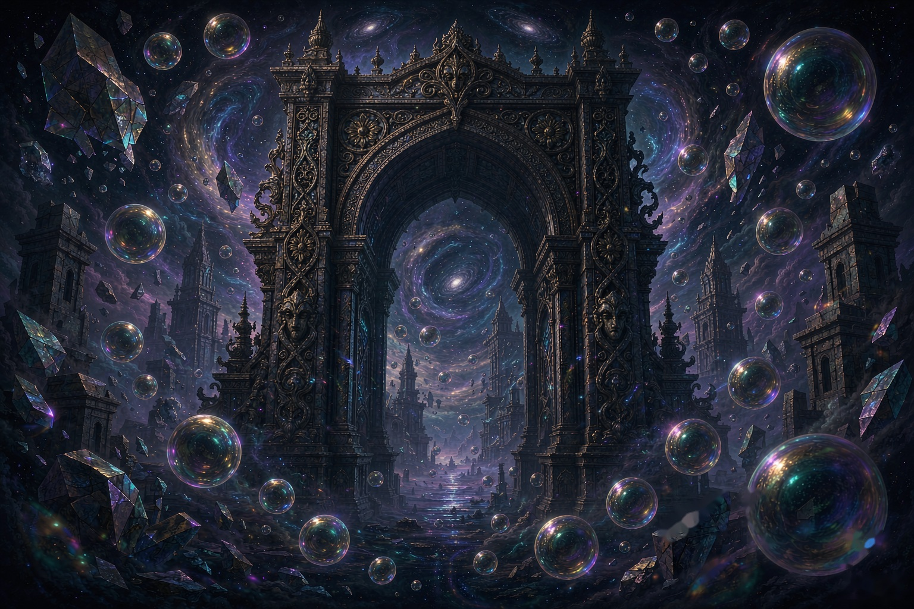
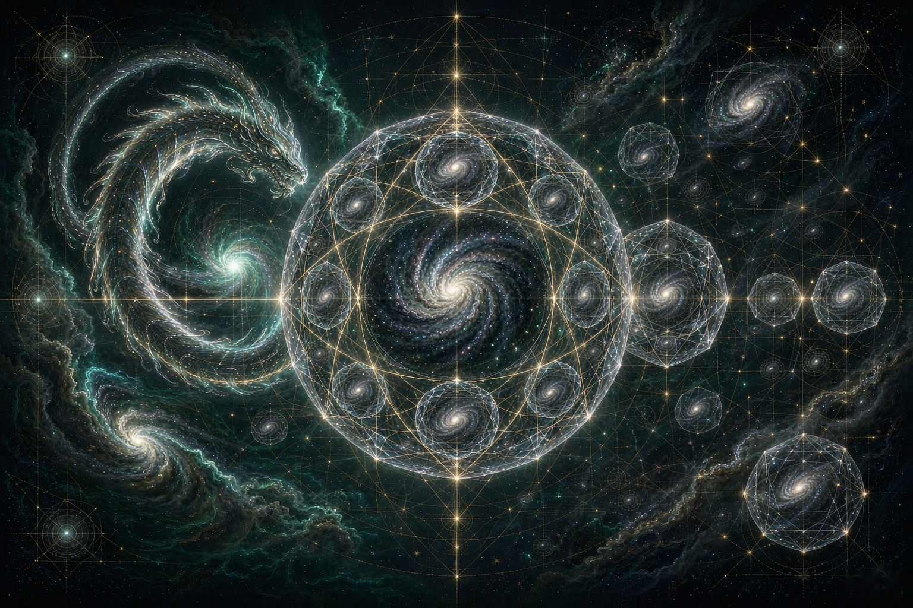

CHARACTER DOSSIERS7 / 7 位
角色档案
先看结论，再进入完整档案核对证据、计算与存疑说明。
⊙ 国△
强爆国#34
终局轨道火球覆盖面积确立强爆国级主档（⊙国△）；一拳将虎力打上月球的动能为强爆城级保底。
2026-10-26 更新阅读档案

⊙ 宇△
强宇宙#80
Ehod 级神明，全书始终沉睡；以苏醒未来的星辰清空与跨位面同步定级，位面数目未定故只记下限，保底标准宇宙级。
2026-10-30 更新阅读档案

⊙ 宇◆
极宇宙#81
祭道之上、自我抹除的「病人」；点眉心一刹那亿万宇宙成灰又复原，以可确认的 1 亿个宇宙定极宇宙级下限，无限描写不过 8.1 门槛。
2026-10-28 更新阅读档案

⊙ 外·门
论外门槛#90
《野生的最终BOSS出现了》的「黑翼霸王」，终局在宇宙之外的终极点与创世女神决战。三次碰撞逐层毁去次元、上位次元、超上位次元，旁白明言力量互为无限、状态值为『∞』，综合主档记论外门槛（ℵ₀）〔下〕、保底超宇宙级。往上只说「更に上」，不再给出更高基数。
2026-10-29 更新阅读档案

⊙ 外·门
论外门槛#90
《死灵之书》中"门、钥匙与守门者"，与全部时间共存、与全部空间同界；却几乎从不亲自行动。综合主档未定级，存在规模记论外门槛（可数无限 ℵ₀），域跨 ω 层维度。这是原作写法所致，非判断其弱。
2026-10-28 更新阅读档案

⊙ 天·下
论天下#94
《走进修仙》世界观最顶层，宇宙最初一批恒星产生的意志。综合量级为宇○（掌控式）——在整个宇宙刻下法度、整体搬运一个可观测宇宙泡；位格单独记录：存在规模过论外门槛，字面为论天下（强不可达基数）及以上，算·超限起码三阶算术实际完备。位格与综合量级并列，互不推出。
2026-10-30 更新阅读档案
⊙ 待定
待定／暂存待定
《法师：飞升》本影力量阶序最顶端的"不可名状者"，即"我是我所是"。规则书无数值、无能力、无行动，地位来自排第一与被定义为遍及一切。综合主档未定级，存在规模记"遍及全部造化（规模未定）"，创世文字作"若采信"存疑。这是作品写法所致，非判断其弱。
2026-10-29 更新阅读档案